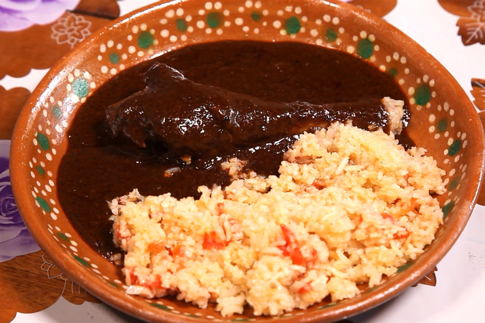

Restaurant México Lindo
Nuestros platillos
Platillo de 3 chalupas poblanas
Delicioso platillo de Chalupas poblanas con salsa verde y roja y carne de res.
Platillo de Mole poblano 
Platillo de Mole Poblano, el cual esta acompañado de carne de pollo o res, y arroz rojo.
Platillo de 3 molotes
Deliciosos molotes de tinga de pollo con crema y salsa. Acompañados de lechuga.